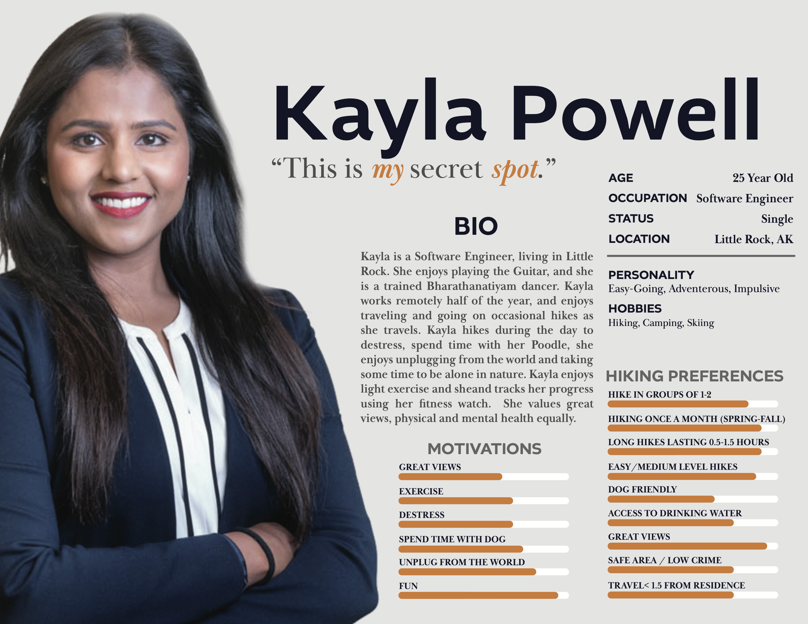

Herd Hikes Web and Mobile Application
UX Designer and Researcher
Project Context - Nature of Prj and Team overview
I developed both low-fidelity and high-fidelity mobile app prototypes for a web-based social media and hike planning platform called HikeHerd. Hike Herd originally began as low-fidelity prototype concept that I developed for a class.
After the course concluded, I became very interested in pursuing my concept of HikeHerd further and this case study highlights the results.
This case study will outline how this final project was conceived, selected, and how the prototype was created.
Overview of Selected Projects
Why Hiking?
I chosen to develop a technological solution to assist hikers throughout the stages of the activity's life cycle. These stages include planning the hike, preparation, hiking, and concluding the event.
Hiking is an excellent form of exercise and a unique opportunity to relax and take a mental break from the chaos of everyday life.
The goal was to create a product that inspires people by simplifying the work required to handle the hike's logistics and planning requirements.
Data was collected to gain information pertaining to why people choose to hike (or not hike).
Once the data was collected, it was examined for patterns that could lead to insights that lead to us design opportunities.
The design implications derived from the data were our main focus throughout ideation.
Finally, we will design an effective and easy-to-use product that can provide value to hikers.
Executive Summary
Our primary goal for this project is to motivate people to go outside and enjoy nature, ultimately
promoting hiking as a fun and healthy lifestyle addition.
There are a plethora of unique experiences that hiking can afford users, including gaining access to natural springs, bird
watching, dog walking, high quality views, and much more.
Our solution will assist users in
selecting trails based on the user’s location, experience level, and interests. One secondary
goal is to simplify the task of finding hiking locations in and around the area specified by the
user. Another goal would be to help potential hikers find other individuals that would be
interested in hiking with them. This can create hiking centered communities and help hikers feel
safer while they are on their trail. There are many reasons why people choose not to hike; we
want to identify those major reasons and tailor a solution to make those excuses as weak as
possible, while also ensuring that the product remains as uplifting and encouraging as possible.
While there are plenty of ways to find a cardio regimen, but this program uses an appreciation of
nature and social interaction to compliment the fitness aspect of hiking.
Existing Technology
There are various mobile applications and web sites available that offer different services to hikers. One popular service for both
finding and mapping trails is AllTrails.
AllTrails Mobile Hiking Application Features
Explore new trails with confidence
Download maps to your phone and see your exact GPS location on a fully detailed trail map, even when you’re offline. Make sure you’re on track by following along the trail.
Never miss a turn with off-route notifications
Load a map or trail route into recorder and hit the trail knowing that if you wander off route, we’ll get you back on track.
Use Lifeline to stay connected to your loved ones
Designed for all outdoor enthusiasts, Lifeline is a real-time tracker that helps you share trip details like planned start/finish time and a map of your planned route. Send status updates to your designated safety contacts with a tap. Most importantly, if you're overdue for your planned finish time, Lifeline will automatically send an alert to your safety contacts along with your last known location.
Stay current with real-time map overlays
Know what to expect before you hit the trail. Pro users get access to real-time overlays including air quality, satellite weather, pollen, light pollution, fire history, and user heatmaps.
Print maps before you hit the trail
Always have a backup without thumbing through guide books. Print your own custom maps,choose your scale, orientation, gridlines, paper size, and even your map layer.

Competitive Analysis
No applications are offering services that are created for the purpose of helping hikers choose, and schedule hiking trips with their contacts or others. This application can bring ease to hikers which can result in a greater liklihood that they will hike and use the service.
The goal is to minimize the users' logistical concerns, allowing them to focus on the hike more than the planning, scheduling, coordinating and communicating with others.
Stakeholders
We have six main categories of people who we view as potential stakeholders. These groups are listed below:
● Expert Hikers (Solo) - Description: Expert hikers are already highly motivated and hike regularly, often on more challenging trails.
● Casual Hikers (Solo) - Description: These are people who are already enthusiastic about hiking. They will already be hiking semi-regularly and have some experience choosing and preparing for different trails.
● Beginners(Solo) - These are people who have little to no hiking experience. They are very new to hiking and may feel uneasy about hiking. Beginners may also include individuals looking to hike as part of another hobby, including activities for photographers, hunters, fishers, social media influencers, or bird watchers. These users are just trying to get started and may feel overwhelmed and intimidated by hiking.
● Families or Groups (Social Hikers) - This category includes people of all ages who like to hike in groups. People from any of the above three categories could also fit into this category. Social Hikers may encounter logistical concerns and might need to take into account a wide variety of preferences.
● Suppliers - Description: Suppliers may include but are not limited to hiking equipment producers, hiking equipment vendors, clothing brands, and food and beverage producers.
● Parks and Trail Owners - Description: Anyone who owns hiking trails is part of this category. State parks and national parks will compose the majority of this group. Park and trail owners can benefit directly from our product. They would like their trails to be discovered and chosen by our users, so visibility and high ratings are important.
User Research Methods and Key Quotes
Data through a mix of phone interviews, online questionnaires, and
online research. We will also study previously existing products that have relevance to our
problem to get a better idea of what is already out there and what could be improved. Other
potential research questions are listed below:
● What are the excuses people use to avoid hiking?
● Besides hiking, what do hikers like to do on their “hiking trips” (e.g. climbing, kayaking,
biking, camping, etc.)? Are there differences between the activities of more/less
dedicated hikers? Why?
● How often do most “hikers” hike throughout the year, and what factors motivate their
decisions?
● How many hiking trips do they schedule, participate in, and cancel each year? Why?
● What are the factors used to determine which trail they choose (location, difficulty, the
time required to complete trail vs. time available to hikers, views, landmarks, etc.)?
● In what other ways do hikers exercise outdoors? Indoors? How do they rank and choose
their activities?
Research Results
Data Collection
| Data Collection Method |
Number of Uses |
Description |
| Online Survey |
11 |
We created a short survey asking what people liked or disliked about hiking, and about some
of their hiking habits and preferences. |
| In-Person Interviews |
3 |
We interviewed three people face-to-face, ranging from novice casual to advanced-casual hikers. |
| In-Person Interviews
|
3 |
We interviewed three people face-to-face, ranging from novice-casual to advanced-casual hikers. |
| Phone Interviews |
2 |
We performed two phone interviews, one with a novice hiker and one withn advanced-casual hiker.
|
| Online Reseatch |
4 |
We researched some pre-existing applications and websites related to hiking, along with some
hikers who go about hiking differently that anyone we were able to personally talk to. |
Research Data Visualization
Data Analysis
No one that we interviewed considered the competitive aspect of hiking as any
motivation. One member of our team has a friendly competition with a friend in a similar activity
to hiking, so we could see competition being a small factor for some users. Many interviewees
did not like using their phones during hikes. A few people liked to track their steps and calories
on the trail. Everyone we interviewed hiked because they enjoyed the outdoors and the
opportunity to relax. Everyone liked hiking with at least a small group of friends, and no one
preferred hiking alone.
Caption caption caption caption caption caption caption caption caption caption caption caption caption caption
Personas



Avid Hiker
Features/Specs the app must have to accomodate hiking
As mentioned in the previous section, our product needs to be able to work both with and
without cell signal.
This reliable offline communication would likely be intended primarily for use in emergencies.
Hikers can share location and event participation to contacts for user's safety.
GPS location and notification if deviating from trail, for user's safety.
Our research suggests that most people prefer to hike in groups. One way we could
encourage hiking is to encourage group collaboration.
Weather and Environmental Concern Alerts
Allow users to identify trails that meet their experience preferences.
Affinity Diagram

Key Findings and Iteration
The key themes identified from our data are convenience, seclusion, community, and safety.
● The first of these themes, convenience, comes from our data indicating that users want to find trails that are nearby and easy to access quickly.
They want to immediately know the features of these trails, including amenities, difficulty, and level of preparedness needed so that they can find
an ideal path with little time and effort spent.
● The second theme, seclusion, is an extension of what our interviewees have stated about technology as it relates to hiking. They want to be "in the
moment" and "aware of their surroundings" on the trail, often wanting to use technology as little as possible during the hike.
● The third theme, community, reflects how our interviewees like to hike. They strongly prefer bonding with others on hikes and sharing unique outdoor
experiences. There may be friendly competition at times, but the technology needs to include a strong social component that encourages collaboration and
is easily accessible for both new and experienced hikers.
● Our final theme is safety - while many people just wanted a fun trail, some users were very interested in ensuring that their chosen trail was low-risk.
Design Criteria from Data
Simplicity While Remaining Effective
Secondly, we want to keep our product as simple as possible. This means we want to have as few
buttons on screen as we can while still providing the necessary functionality and maintaining usability. To
accomplish this, we need to carefully think through what functionalities the user will need and how we
can best present those functionalities to the user. When comparing two designs, if one is able to present
the same capabilities to the user with less clutter onscreen than the other, the simpler design will be
favored over the more complicated design. An easy way to measure simplicity is to count the number of
buttons on the screen. As long as we do not sacrifice functionality, fewer buttons is better. We do need to
be careful with this criteria, however, as it could result in simple tasks requiring several screens to access.
This means we need to minimize the buttons per screen while still trying to satisfy the competing criteria
of minimizing the number of screens required for completing a task. The best designs will find a balance
between the two.
Safety
The final research theme is a need for safety on the trail. One of our personas from the previous
assignment, Belinda, likes to hike with her young son. Because of this, she often likes to hike on trails she
knows are safe, with access to nearby civilization and a lack of rough terrain. With this in mind, we would
like to include some form of safety information in our product. This information could include warnings
for natural hazards such as large cliffs, dangerous rivers, and hazardous wildlife, as well as other potential
problems such as rough trails, bad cell service, and lack of access to emergency assistance. A successful
implementation of this idea will result in the user feeling secure and informed in their choice of trails,
knowing that they are not going somewhere where things could easily go wrong. A good design provides
as much useful information as possible without overloading the user with more data than they can easily
digest.
Ideation
Ideation
There were 2 ideation sessions that both spanned 45 minutes.
The goal was to keep the design criteria in mind and come up with as many judgement free ideas as possible.
Different techniques were used ranging from reframing problems that users have with hiking and creating solutions.
Some were serious, others were strange or funny. But all helped reframe user needs into viable technological solutions.
Example: Some users are afraid of coming into contact with dangerous wildlife. Solution: Create an application that alerts users of trails where
dangerous wildlife have recently been spotted. OR Some users might like the sense of danger, Create an Augmented Reality Application that adds danger to the hike, ie the user is being chased by a mountain lion and they have to escape.
110 ideas were generated, as can be seen below.

Idea Selection
Selecting a Final Design Concept
To select the final design concept, I looked at the Ideas generated, and analyzed them in terms of
implementation feasibility. I then studied if different ideas this satisfy market and user needs that are backed by our data. Finally, which concept follows our design criteria the
best? With our updated criteria, community was the unanimous winner, as few applications were acknowledging this user need.
Low-Fidelity Prototypes, Features and Storyboards
Group Hiking Coordinator
● Capabilities : This website helps create communities around hiking through personal user
accounts. Users can browse potential hiking locations in the locations tab and view geotagged
photos posted by other users in the user photos tab. The site also hosts a blog where users can
post about their hikes, critique trails, and offer helpful tips. They can send and receive messages
from other users. On the dashboard, users can view their calendar, browse hikes by location, and
view trail features, optionally limiting results to events shared by contacts or public events posted
to the community at large. The user can read about each hike and note whether or not they are
interested in going. All input is shared in the hikes log below. If a user selects “Going”, it will be
added to the user’s calendar. Each user will have their own profile, displaying photos, hiking
qualitative metrics, and preferences. Profiles can be public or private (viewable by contacts only).
They can add friends as contacts and manage groups of friends into hiking groups, where
members can message each other and coordinate details pertaining to their hiking event. Users
can list favorite locations and obtain information regarding events in those locations, manage
contacts, and follow certain users’ blog entries. Finally, users can search through the site’s
contents to find users and hiking locations.
● Focus : This website addresses the Community and Convenience design trends. Our interviewees
liked the social aspects of hiking, yet sometimes struggled with planning. This website will
provide features to the user to help them plan and obtain information regarding their hike, manage
hiking events with friends, find trails that meet their requirements, and meet like-minded
individuals. All of this is obtained by means of a free, simple, easy, and convenient platform
dedicated to streamlining the hiking planning process and fostering community.
● Stakeholders : The most relevant stakeholders would be enthusiastic hikers looking to hike with
groups of individuals. Primarily this appeals to our John Walker persona, which includes
individuals that want to plan hikes with others, track progress, and belong to an enthusiastic
hiking-centered community. This app will likely appeal to enthusiastic hikers of ages 22-50.
● Tech Innovation : There are no major social media or event planning and management sites
created around Hiking that we are aware of. This is a novel concept that helps bring people
together around their interest in hiking, and it helps users find their ideal trails.
● Supported Activity : This solution aims to get people hiking with other individuals. Managing
individuals, managing events, and obtaining information can be difficult. This site eases the
process by helping users collaborate with contacts and meet new people so that individuals who
want to hike with others can do so.
Sketches
Caption caption caption caption caption caption caption caption caption caption caption caption caption caption caption caption caption caption caption
s caption
Design Identity and Creative Process
Prow dead men tell no tales gabion scallywag Letter of Marque hempen halter draft salmagundi handsomely gun. Poop deck black spot lee Sail ho killick Barbary Coast crow's nest prow square-rigged mutiny. Snow nipper jack driver salmagundi Plate Fleet shrouds smartly Chain Shot lateen sail.
Snow list lugsail Arr brig scuppers Shiver me timbers gaff swing the lead starboard. Knave swing the lead swab sutler tack execution dock topgallant Privateer nipper fire in the hole. Main sheet scuppers hail-shot carouser coffer mutiny topgallant grapple sutler grog.
Barque broadside square-rigged crow's nest cog matey spyglass grapple Sea Legs hempen halter. Provost cable doubloon prow Plate Fleet pillage salmagundi jack smartly gibbet. Booty Cat o'nine tails chase guns handsomely chandler mizzen scourge of the seven seas gangway yardarm Sea Legs.
Caption caption caption caption caption caption caption caption caption caption caption caption caption caption caption caption caption caption caption
s caption
High-Fidelity Prototypes and Scenarios
Links to Prototypes
Key Activities
Activity: Creating Event and add friends
Adding Friends to Hike
Searching for hike
Activity: Finding which trails are safest
Our research has shown that users are concerned about the overall safety of unknown trails when
planning a hiking trip. We want our prototype to keep track of danger by offering users the ability to view
reported hazards on a distant trail. This will let users scout out a trail so they can find confirmed and
potential hazards before making their decision. Hike planners are the primary stakeholders, as they will
directly benefit from knowing what trails meet their safety standards, while the hikers who accompany
them are also affected by the decision of what trail to hike, which is assisted by the knowledge of what
could await them on each trail.
Evaluation from Users
I created excel sheets that would allow users to critique our prototypes using Cognitive Heuristic Techniques.
Links to Evaluations
Key TakeAways from Evaluations
The majority of our subjects were able to navigate our application, however some of our design choices need to be refined to make the experience more intuituve to all users.
Value Proposition
Prow dead men tell no tales gabion scallywag Letter of Marque hempen halter draft salmagundi handsomely gun. Poop deck black spot lee Sail ho killick Barbary Coast crow's nest prow square-rigged mutiny. Snow nipper jack driver salmagundi Plate Fleet shrouds smartly Chain Shot lateen sail.
Snow list lugsail Arr brig scuppers Shiver me timbers gaff swing the lead starboard. Knave swing the lead swab sutler tack execution dock topgallant Privateer nipper fire in the hole. Main sheet scuppers hail-shot carouser coffer mutiny topgallant grapple sutler grog.
Barque broadside square-rigged crow's nest cog matey spyglass grapple Sea Legs hempen halter. Provost cable doubloon prow Plate Fleet pillage salmagundi jack smartly gibbet. Booty Cat o'nine tails chase guns handsomely chandler mizzen scourge of the seven seas gangway yardarm Sea Legs.
Next Steps
Next steps will include gaining additional data, and critiques to further refine the prototype.
Lessons Learned and Final Reflection
I learned a lot about user research, app design, and all the steps associated with designing effective and useful low-fidelitity and high-fidelity prototypes. I will use this information in the future to continue refining my skills.